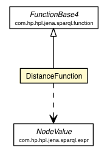

it.apice.sapere.demo.functions.impl
Class DistanceFunction

java.lang.Object
 com.hp.hpl.jena.sparql.function.FunctionBase
com.hp.hpl.jena.sparql.function.FunctionBase4
it.apice.sapere.demo.functions.impl.DistanceFunction
com.hp.hpl.jena.sparql.function.FunctionBase
com.hp.hpl.jena.sparql.function.FunctionBase4
it.apice.sapere.demo.functions.impl.DistanceFunction
- All Implemented Interfaces:
- com.hp.hpl.jena.sparql.function.Function
public class DistanceFunction
- extends com.hp.hpl.jena.sparql.function.FunctionBase4
Function that computes the distance between two points.
- Author:
- Paolo Contessi
| Fields inherited from class com.hp.hpl.jena.sparql.function.FunctionBase |
arguments |
|
Method Summary |
com.hp.hpl.jena.sparql.expr.NodeValue |
exec(com.hp.hpl.jena.sparql.expr.NodeValue x1,
com.hp.hpl.jena.sparql.expr.NodeValue y1,
com.hp.hpl.jena.sparql.expr.NodeValue x2,
com.hp.hpl.jena.sparql.expr.NodeValue y2)
|
| Methods inherited from class com.hp.hpl.jena.sparql.function.FunctionBase4 |
checkBuild, exec |
| Methods inherited from class com.hp.hpl.jena.sparql.function.FunctionBase |
build, exec, getContext |
| Methods inherited from class java.lang.Object |
clone, equals, finalize, getClass, hashCode, notify, notifyAll, toString, wait, wait, wait |
DistanceFunction
public DistanceFunction()
exec
public com.hp.hpl.jena.sparql.expr.NodeValue exec(com.hp.hpl.jena.sparql.expr.NodeValue x1,
com.hp.hpl.jena.sparql.expr.NodeValue y1,
com.hp.hpl.jena.sparql.expr.NodeValue x2,
com.hp.hpl.jena.sparql.expr.NodeValue y2)
- Specified by:
exec in class com.hp.hpl.jena.sparql.function.FunctionBase4
Copyright © 2012 APICe Lab, Alma Mater Studiorum - Università degli Studi di Bologna. All Rights Reserved.